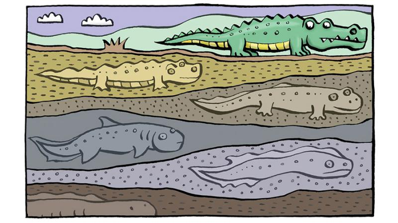
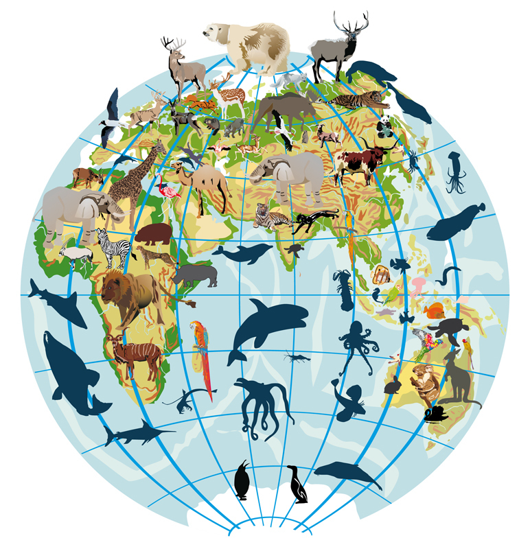
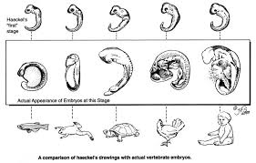
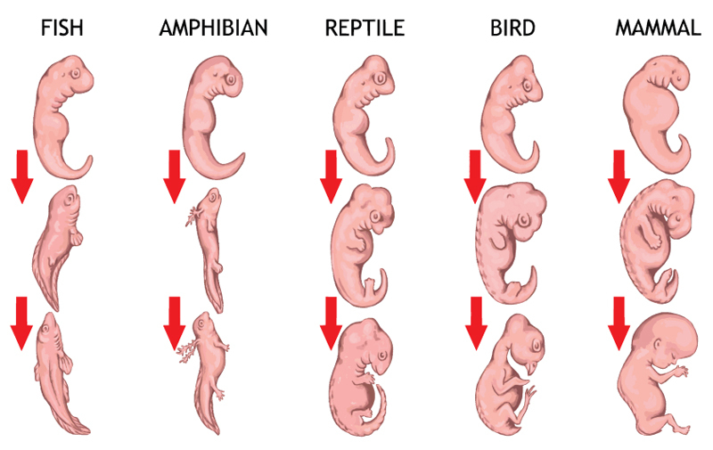
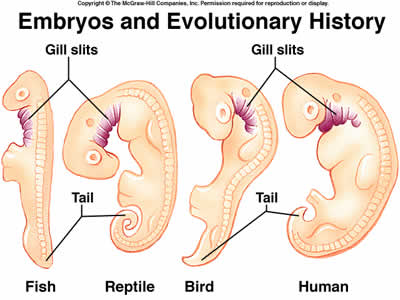
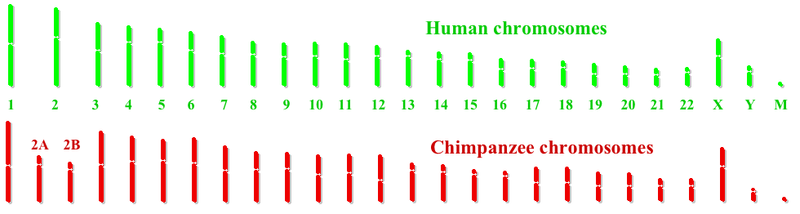
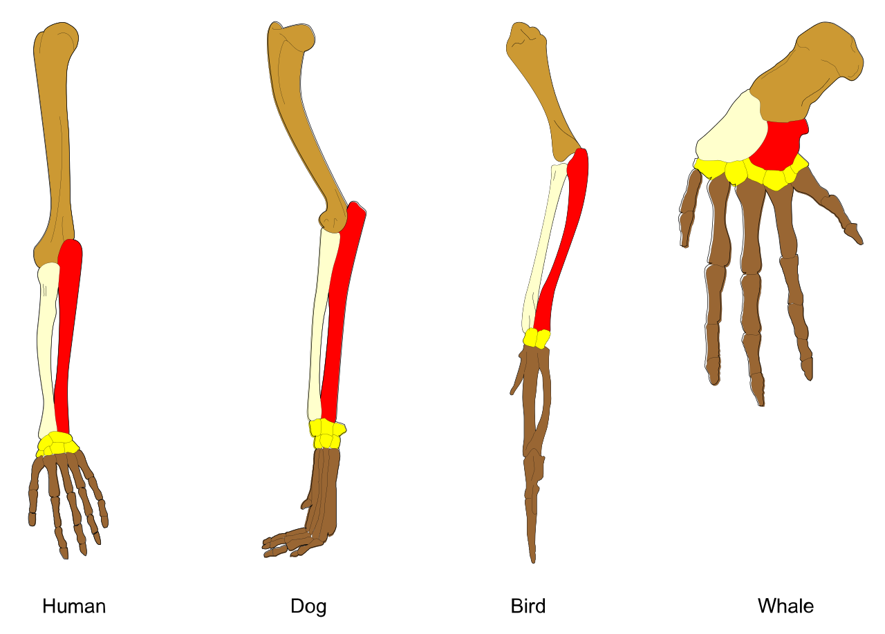
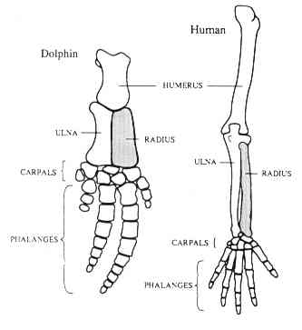
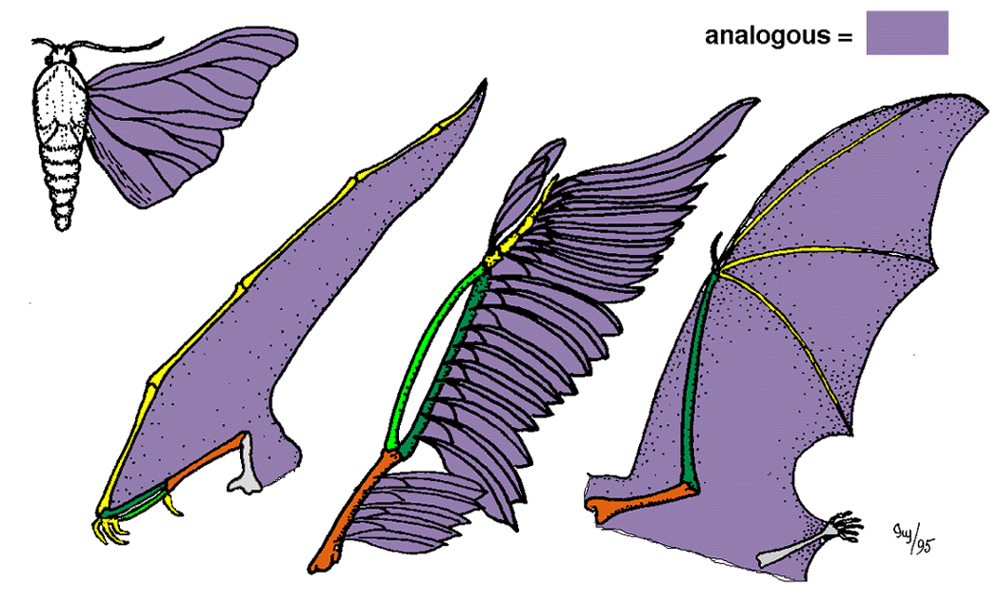
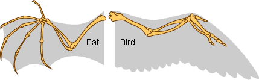

Proof Of Evolution
Intro
The concept of evolution is very well known and almost completely agreed upon in the world.
This theory states : Evolution is the change in heritable characteristics of biological populations over
multiple successive generations.
There is a lot of evidence to support this theory.
This website will be exploring that evidence in trying to prove the theory.
There are multiple takes on this theory, the most popular being Charles Darwins theory.
There is a lot of evidence to support this theory and just some examples will be explored in this website.
The Evidence
Fossils and Vestigial structures
The fossil records collected over time can show us a representation of the past.
These fossil records when compared to todays organisms can show us the evolutionary change that took place.
This clearly shows how life has changed over time.
There is a lot of examples of this and only one will be explored in this section.
-Examples-

The image above shows us the supposed evolution of modern whales.
We can clearly see the similarities between the fossils.
The biggest piece of evidence is the pelvis that remained since the first ancestor but changed a lot.

This is named a "Vestigial structure" a structure that does not serve a purpose.
To find out more information on vestigial structures follow this link.
For more information on how fossils can be used to prove evolution, use this link.
Biogeography
BioGeography is the study of the distribution of organisms over geographical areas or regions.
BioGeography is an important factor when it comes to researching evolution because geographical boundaries such as rivers,mountains and valleys,
allow scientists to observe how a species evolves differently when seperated.
There are a lot of examples on how biogegraphy supports the theory of evolution, only one is going to be explored in the next section.
-Examples-

One of the biggest pieces of evidence for evolution comes from BioGeography,
this is because many of the important discoveries linked to evolution
were made on remote islands. In the example of Charles Darwin,
many of his most important discoveries were made on the islands of Galapagos.
Darwin noticed that a lot of the animals found on the islands were not found anywhere else in similar climate conditions on earth,
but were similar in the way they adapted.
And to the question "Why do animals on distant and isolated landmasses appear related, but distinct?" his awnser was Evolution.
For more information and examples use this link.
Embryos
An 'Embryo' is : an organism in its earliest stage of development.
The way that embryos are can be used as evidence to support evolution is because of the following:
Every type of organism has an embryo stage, this includes humans,fish and reptiles just as a few examples.
But even though there is such a big difference in these organisms, they still have striking similarities in their embryo phase.
The similarities are quite obvious but there are some examples that support the theory of evolution even more.
-Examples-

The image above shows the similarities between embryos but the biggest piece of evidence comes in the image below.
This image shows that in the embryonic stage very different species including humans, all develop gill slits.
In fish those slits develop into gills, while in humans they dissapear before birth.
This shows us how similar the development of organisms is, pointing at a common ancestor, and thus pointing at evolution.
To get more info on how embryos point to evolution use this link.
Genetics
DNA is the genetic blueprint in every cell of our body and it dictates everything in our body,
from the colour of our eyes to the complex processes that happen in our cells.
Scientists have found a way to test this genetic information and are thus able to compare how similar different species are.
This method can thus help us prove the theory of evolution by
being able to tell us how closely or distantly related certain species are.
There is even a difference in the genome of individual humans, but it is howevere miniscule, about 0.1%
But there are a lot of examples of species having an incredibly similar genome.
-Examples-
The prime example would be the similarity in the genome of humans and chimps.
In the article : "Searching for a needle in a haystack" by Ajit Varki and Tasha K. Altheide
it is stated that the difference between the human genome and that of a chimp could be as small as 4%.
This shows us the clear relation between the two species and points towards evolution.
To find out more about how genetics can help prove the theory of evolution use this link.
Homologous structures
Homologous structures in terms of organisms are, seperate organisms having very similar biological structures, while they have a different function.
The relationships between these structures can help us prove evolution because they are presumably evolved from a common ancestor
but they evolved divergently, or seperated in order to adapt themselves to their respective environments.
There are a lot of examples of homologous structures in the world around us and only one of them is : the arms of humans and the fins of whales.
-Examples-
In the image above two very distant species are shown, the fin of a whale and the arm of a human.
There is a clear resemblance between the structures of two, while they still have very different functions.
This is a clear example of homology, and it supports the theory of evolution by suggesting a common ancestor.
This would suggest us evolving differently from whales, while still evolving from a common ancestor.
This is also an example of divergent evolution.
To find out more about homologous structures and how they relate to evolution, use this link.
Analogous structures
In terms of organisms analogous structures are: very different structures in different species, but these structures have the exact same function.
These structures have the potential to help prove convergent evolution, by suggesting that different species adapted similarly
despite having no common ancestor.There are also quite a few examples of analogous structures in the world but the most obvious example is the wings of birds and the wings of bats.
-Examples-
In the image above we can see the wings of both bats and birds,
these two species are very different but both have wings and the ability to fly
This is an example of analogous structures as we can clearly see the differences in the structure.
This would suggest birds and bats evolving convergently, or both evolving the ability to fly despite having no common ancestor.
This can help us prove the theory of evolution by showing different species EVOLVING the same abilities to better suit their environment.
To find out more about analogous structures and convergent evolution use this link.
Conclusion
To conclude.
There is a lot of evidence to support the theory of evolution, and that is one of the reasons it is so widely accepted.
Everybody is urged to find out more about this theory becuase it is so wide spread and known and this website only covered a small fraction
Use this link for more info on the evidence to support evolution.